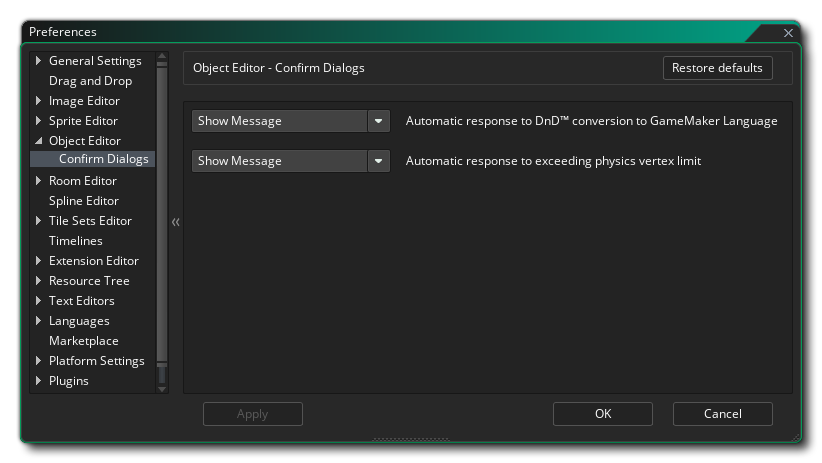

Die Objekt-Editor-Einstellungen werden verwendet, um bestimmte Eigenschaften für das Objekt-Editor- Fenster zu definieren. Der Hauptabschnitt enthält die folgende Option:
- Standard-Hilfeinhalt hinzufügen: Standardmäßig ist diese Option aktiviert und es wird lediglich ein einfacher Kommentar in den Code-Editor für alle neuen Ereignisse eingefügt, um Sie daran zu erinnern, dass Sie Ihren Code dort hinzufügen können.
- Standard-Ereignisinhalt: Hier können Sie die Kommentare bearbeiten, die standardmäßig im Codefenster für neue Ereignisse hinzugefügt werden.
Die folgende Unterkategorie existiert auch für den Objekt-Editor:
Dieser Abschnitt beschäftigt sich mit den Dialogen, die bei Verwendung des Objekt-Editors mit der folgenden Option angezeigt werden können:
- Automatische Antwort auf DnD & trad; Umwandlung in Gamemaker Language: Sie können die rechte Maustaste benutzen
Wählen Sie im Drag & Drop-Arbeitsbereich die Option aus, alle Drag & Drop-Vorgänge für dieses Ereignis in GML-Code umzuwandeln. Standardmäßig wird hier eine Warnmeldung angezeigt, in der Sie gefragt werden, ob Sie fortfahren möchten. Sie können dies jedoch auf "Okay" setzen und das Dialogfeld wird vor der Konvertierung nicht angezeigt.
- Automatische Antwort bei Überschreitung der physikalischen Scheitelpunktgrenze: Diese Option kann verwendet werden, um die Popup-Meldung zu steuern, die angezeigt wird, wenn Sie die zulässige Scheitelpunktnummer im Physikform-Editor überschreiten. Die Standardaktion hier ist, eine Warnmeldung anzuzeigen, aber Sie können dies auf "Okay" setzen und der Dialog wird nicht angezeigt.